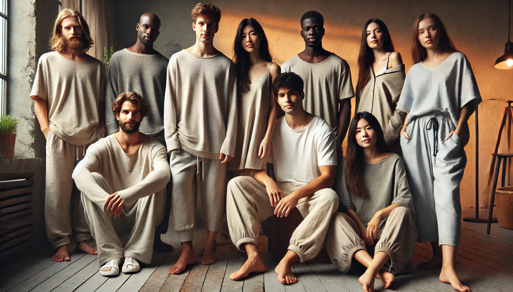
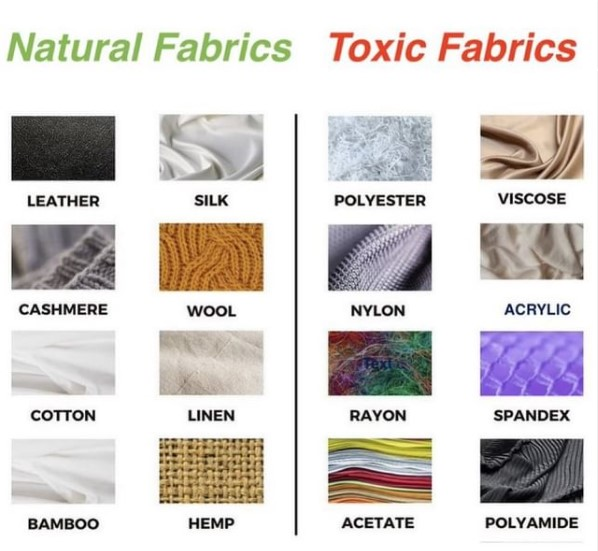
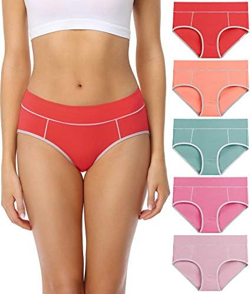
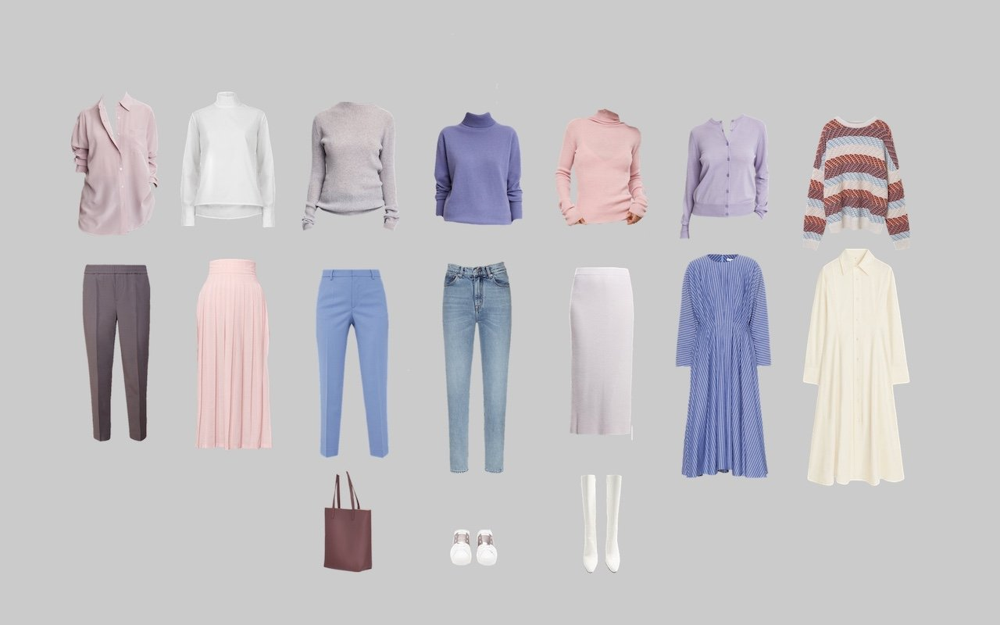
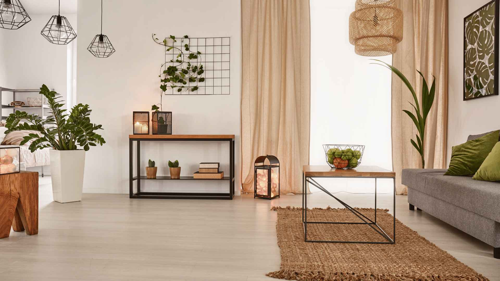
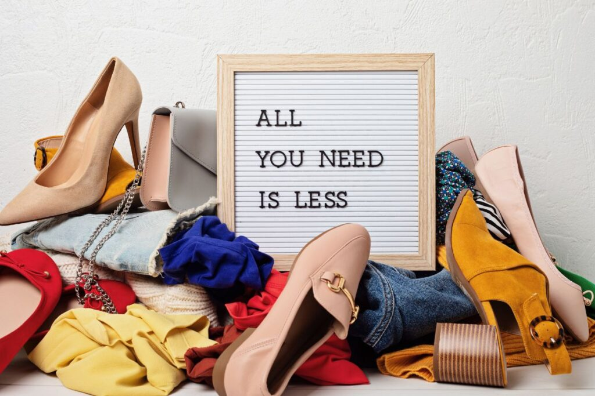

1. Avoid Tight Clothing
Opt for loose, relaxed clothes instead of tight ones. Loose clothing improves airflow and doesn’t restrict movement, promoting comfort and circulation.
2. Minimize Synthetic Fabrics
Avoid synthetic fibers like nylon, polyester, and spandex. These can trap heat and moisture, leading to discomfort. Choose natural fibers instead.

3. Choose Natural Fabrics
Pick fabrics like cotton, linen, hemp, and bamboo. These materials are breathable, moisture-wicking, and gentle on the skin.
4. Comfortable Underwear
Select undergarments made from cotton or other natural fabrics. Cotton is breathable and ideal for intimate wear, helping prevent irritation.
5. Stick to Light Colors
Wear lighter colors, especially in hot weather. Light colors reflect sunlight, keeping you cooler, while dark colors absorb more heat.
6. Select Calm, Neutral Colors
Colors like beige, white, and earthy tones create a calming effect. They’re versatile, suit a range of skin tones, and feel comfortable.
7. Invest in Quality, Not Quantity
Rather than buying a large amount of low-quality clothing, invest in a smaller selection of high-quality, comfortable pieces made from natural fabrics.
